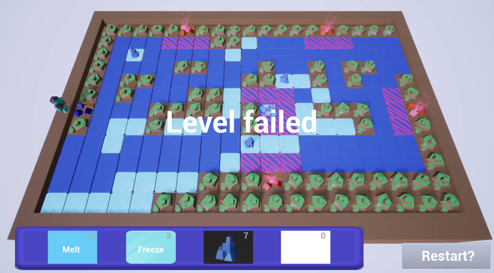
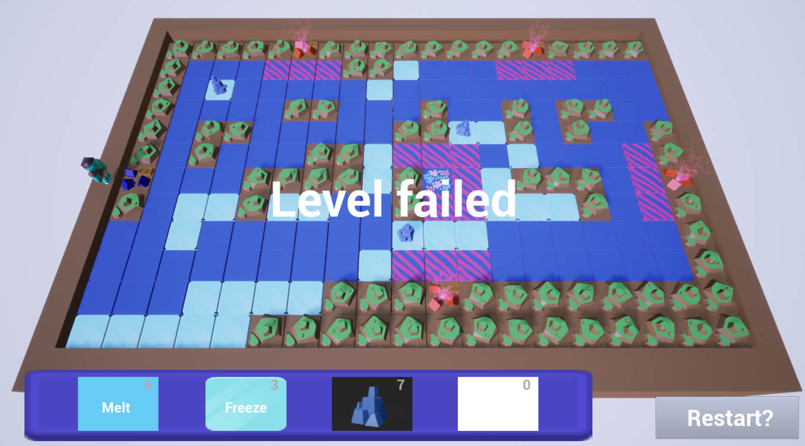
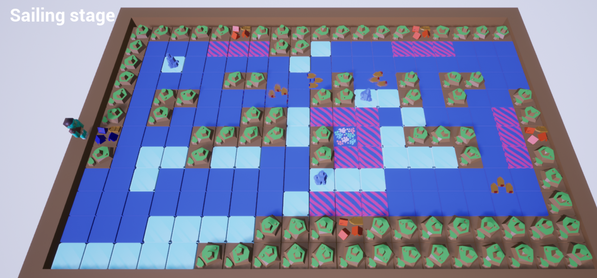
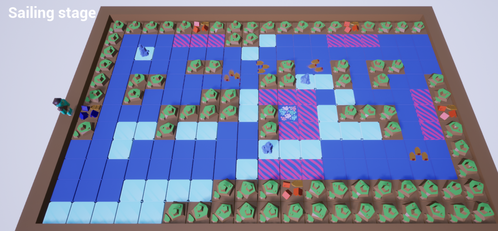

Learning the steps of game design and prototyping
During these lessons we were giving two keywords to be a starting for our game.
Then we brainstormed around these two keywords and thinking about a game and the mechanics around it.
Our main mechanic is meant to be unique, so I looked at other similar games and there unique main mechanics.
So, I can learn how those games where so much fun yet similar except there unique mechanics.
This is where I thought about the time mechanic and how it can change the flow of the game.
By keeping people on edge with a timer and making mechanics around that.
Learning constructive feedback
Each week we worked on the prototype, we were tasked to give constructive feedback to other students.
This makes gave a lot of perspectives on how other people came up with their mechanics and how they perceive your game.
Because every game needs it testers and multiple people to give constructive feedback and perspectives on the game.
Whenever I receive feedback, I took it in mind, tested it,
see if people liked it. Getting feedback from it and so on again.
This made my game change by a lot in a good way.
I love giving constructive feedback to other students, because I like giving the person more options
and perspective to improve their prototype and seeing it in action.
Of course not all feedback can be implemented, but its best to still keep it in mind in the future.

 
